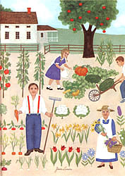

Just how common is vegetable raising? Who's doing it? Why? And what is everybody raising? Well, if it weren't for the National Gardening Association (180 Flynn Ave., Burlington, VT 05401), nobody'd really know. Fortunately, that nonprofit group has been commissioning an annual Gallup poll on the topic for well over a decade. The answers they've received are revealing and definitely worth a look.
In 1971, the year after MOTHER N0. 1 was published, 25 million households, or 39% of American families, were raising some of their own vegetables. That number quickly rose until, by 1981, 38 million - 47%, or almost half - of our nation's households were gardening. Then, however, the numbers started to drop. By 1985, 33 million households - 37% - were growing vegetables.
What happened?
To put the answer simply, the worse the economy, the more people garden.. In 1981, interest rates were 20%, the nation was stuck in a deepening recession, and people were growing food primarily to save money. (And gardeners do save money - spending about $32 a year per family while harvesting $356 worth of produce!) Today, the financial climate appears rosier, so the pressure to "garden for greenbacks" has slacked off.
As a matter of fact, in keeping with our increasing national interest in nutrition and health, the number one reason people garden today (30% gave this answer) is for fresh vegetables, and number two (25%) is to get better-tasting, higher-quality food. Even gardening for fun (22%) beats out saving money (15%) as a motive.
And fear not - gardeners are hardly an endangered species. Indeed, that 37% of households raising crops in '85 made vegetable growing the second most popular outdoor leisure activity in America. Actually, if you include the flower growers, gardening rises to the most popular form of outdoor recreation.
Here are some more fascinating facts about vegetable gardeners: 73% of them are married. An equal percentage live in suburban and in rural areas. Gardeners break down pretty evenly by sex: 48% male, 52% female. And an impressive 53% of the backyard crop raisers have been gardening for 10 or more years!
Surprisingly, only 29% of the gardeners are getting their know-how from books or magazines. Instead, the number one source of gardening information - 73% of growers rely on it - is seed packets! (That's kind of humbling for us writer types.)
The top gardening problem? Insects (35% of those polled mentioned it). That's followed by weeds (23%) and water shortages (16%). By the way, according to the 1984 poll, 47% of gardeners used an insecticide. That news may depress some organic gardening enthusiasts . . . until they turn it around and realize that over half the gardeners did not resort to such preparations.
The most popular homegrown vegetable? The winner - far and away - the tomato! It's followed, in order, by peppers, green beans, cucumbers, onions, lettuce, summer squash, carrots, radishes, and - way down in tenth place - sweet corn.
Well, that about wraps up the facts on gardeners. What about non gardeners? Why aren't they growing crops? The leading reason people don't garden (35% of respondents) is lack of space. Lack of time comes in second (28%), and then in third place (a mere 13%) comes the opinion that it's too much work.
And actually, 19% of the non-vegetable-raisers - an estimated 10 million households - did grow a few vegetables for their dinner table, either in containers, alongside some flowers, or in a border planting.
One thing for sure: No matter how many millions are raising vegetables or why they choose to do so, we here at MOTHER resolve to do our best to provide them with the best and most useful gardening information we can.
That is, if we can get them to stop spending all their time reading seed packets!
|
 |
|
|